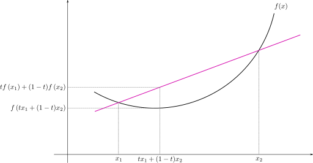

Dynamic Reweighting Of Experts Advice
Outline
- Motivation
- The Problem
- Why Experts?
- Why Reweight?
- Matching The Best Expert
- Tracking The Best Expert
- Conclusions
Goal
- Given
- independent time series \(x_1, x_2, \ldots\)
- dependent time series \(y_1, y_2, \ldots\)
At Our Disposal
Experts \(\hat{y}^1, \ldots, \hat{y}^m\)Each "expert" is an algorithm
Why Multiple Experts?
How To Combine?
- Guess
- Use state variables
- Instrument (w. X-validation?)
Outline
- Motivation
- Matching The Best Expert
- Tracking The Best Expert
- Conclusions
Universal Reweighting
Suppose| Adversary | We | |
|---|---|---|
| Advantage | knows in advance \(x_{1, ...}\) | can combine experts' predictions |
| Disadvantage | must choose a single expert \(\hat{y}^k\) | online |
Exponential Penalties
| Initialize | $$ w_1 = \cdots = w_m = \frac{1}{m} $$ |
|---|---|
| Predict | $$ \hat{y}^{\mathcal{U}}_i = \sum_j v_i^j \hat{y}^j_i, $$ where $$ v_i^j = \frac{w_i^j}{\sum_i w_i^j } . $$ |
| Update | $$ w_{i + 1}^j = w_i^j e ^ {- \eta L\left( \hat{y}_i^j, y_i \right) } , $$ for some \(c > 0\). |
Exponential Penalties Are Universal
Theorem $$\frac{1}{n} \sum_{i = 1}^n L(\hat{y}_i^{\mathcal{U}}, y_i) \leq \min_k \frac{1}{n} \sum_{i = 1}^n L(\hat{y}_i^k, y_i) + O\left(\frac{\ln (m) }{n}\right)$$- Regret decreases to 0 as \(n \rightarrow \infty\).
- The regret is the overhead of "describing" the best expert.
"Expert's Probability"
Definition An expert's probability is defined as $$ P^j\left( y_1, \ldots, y_n \right) = e ^ {-\frac{1}{2c} \sum_{i = 1}^n L\left(\hat{y}^k_i, y_i\right)} , $$ (\(b\) is a normalizing constant).
From the POV of the expert, high-loss sequences are unlikely.
"Universal's Probability"
Since the universal predictor is an average of the predictors, we can define it in two ways.
Definition
- "weighted universal probability" $$ \underline{P}^{\mathcal{U}} \left( y_1, \ldots, y_n \right) = \frac{1}{m} \sum_j P^j\left( y_1, \ldots, y_n \right) = \frac{1}{m} \sum_j e ^ {-\frac{1}{2c} \sum_{i = 1}^n L\left(\hat{y}^j_i, y_i\right)} . $$
- "performance universal probability" $$ \overline{P}^{\mathcal{U}} \left( y_1, \ldots, y_n \right) = e ^ {-\frac{1}{2c} \sum_{i = 1}^n L\left(\hat{y}^{\mathcal{U}}_i, y_i\right)} . $$
Relationship Between The Two "Probabilities"
 $$ -\ln\left( \underline{P}^{\mathcal{U}} \left( y_1, \ldots, y_n \right) \right) \geq \\ -\ln\left( \overline{P}^{\mathcal{U}} \left( y_1, \ldots, y_n \right) \right) = \frac{1}{2c} \sum_{i = 1}^n L\left(\hat{y}^{\mathcal{U}}_i, y_i\right) . $$Bounding the Weighted Universal Probability
$$ \underline{P}^{\mathcal{U}} \left( y_1, \ldots, y_n \right) = \frac{1}{m} \sum_j P^j\left( y_1, \ldots, y_n \right) \geq \\ \max_j P^j\left( y_1, \ldots, y_n \right) . $$
Taking \(\log\) and simplifying,
$$
- \ln \left( \underline{P}^{\mathcal{U}} \left( y_1, \ldots, y_n \right) \right)
\leq
\\
\min_j
\left\{
\ln(m) + O(1) +
\sum_{i = 1}^n L\left(\hat{y}^j_i, y_i\right)
\right\}
$$
Outline
- Motivation
- Matching The Best Expert
- Tracking The Best Expert
- Conclusions
Changing Best Experts
- \(k + 1\) segments; \(k\) unknown, transition points unknown
- Each segment has a best expert
Wait, Didn't We Just Solve This?
- The number of \(k\) partitions in an \(n\)-length sequence is finite.
- So is the choice of best expert per segment
Counting The Options
- Number of "experts" $$ \Theta\left( m^{k + 1} \left( \frac{en}{m} \right)^m \right) $$
- Regret is $$ \Omega \left( (k + 1) \ln(m) + k \ln\left( \frac{n}{k} \right) \right) $$
Is The Previous Algorithm Suitable For This?
- No (it can be shown).
- The weights do not flow quickly enough between experts.
An Improved, Pooling, Algorithm
| Initialize | $$ \eta, c > 0, 0 \leq \alpha \leq 1, \\ \underline{w}_1 = \cdots = \underline{w}_m = \frac{1}{m} $$ |
|---|---|
| Predict | $$ \hat{y}^{\mathcal{U}}_i = \sum_j v_i^j \hat{y}^j_i, \\ v_i^j = \frac{\underline{w}_i^j}{\sum_j \underline{w}_i^j } . $$ |
| Loss Update | $$ \overline{w}_{i + 1}^j = \underline{w}_i^j e ^ {- \eta L\left( \hat{y}_i^j, y_i \right) } , $$ |
| Share Update | $$ \underline{w}_{i + 1}^j = (1 − \alpha) \overline{w}_i^j + \frac{\alpha}{m - 1} \sum_{k \neq j} \overline{w}_i^k $$ |
4 Main Points For Why It Works
High Final Weight → Low Total Regret
Lemma 1: In the first segment, the regret compared to expert \(j\) is at most $$-2 \ln \left( \underline{w}_{n + 1}^j \right)$$
Proof
$$
L(\hat{y}_i^{\mathcal{U}}, y_i) \leq -c \ln \left( \sum_j v_i^j e^{-L\left( \hat{y}_i^j, y_i \right)} \right) (1)
$$ (Vovk)
$$
L(\hat{y}_i^{\mathcal{U}}, y_i) \leq -c \ln \left( \frac{\sum_j \overline{w}_i^j}{\sum_j \underline{w}_i^j} \right) (2)
$$
$$
\sum_{i = 1}^n L(\hat{y}_i^{\mathcal{U}}, y_i) \leq -c \ln \left( \prod_{i = 1}^n \frac{\sum_j \overline{w}_i^j}{\sum_j \underline{w}_i^j} \right) (3)
$$
$$
\sum_{i = 1}^n L(\hat{y}_i^{\mathcal{U}}, y_i)
\leq
-c \ln \left( \sum_J \underline{w}_{n + 1}^j \right)
\leq
-c \ln \left( \underline{w}_{n + 1}^j \right)
(4)
$$